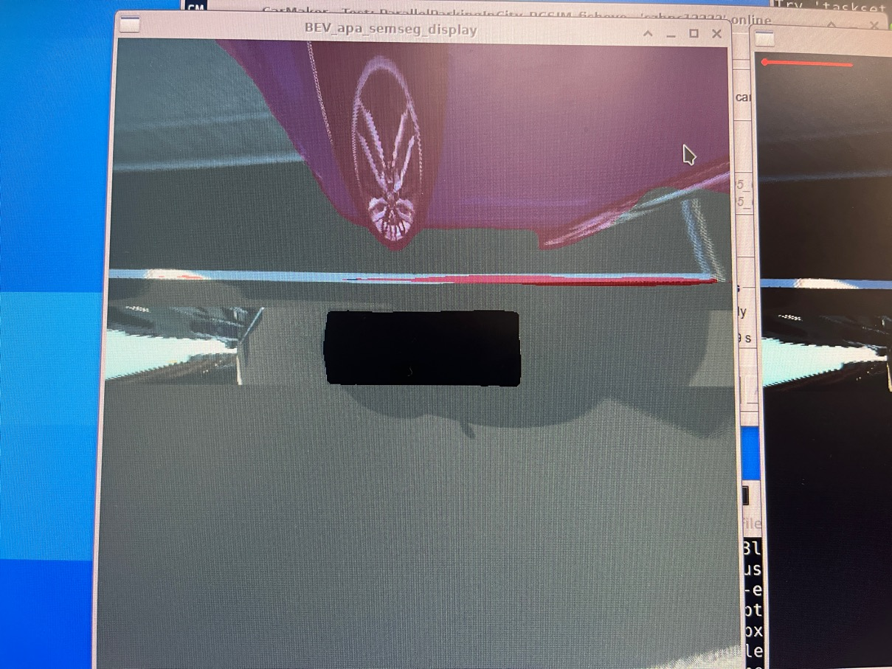
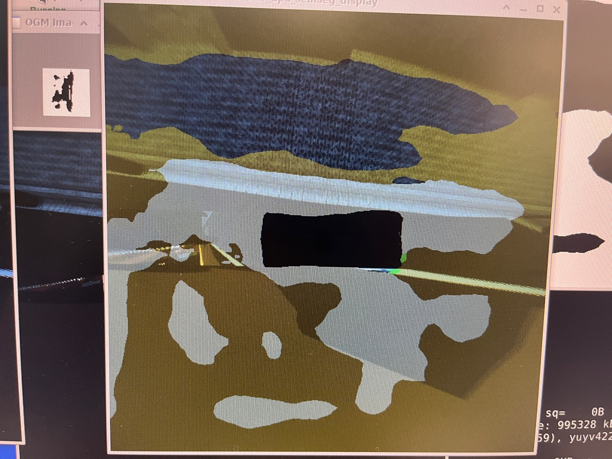

Requirments and feedbacks collection for carmaker sim
YANG Jiyu (XC-AS/PJ-WIN-MW1) user-56498 CHENG Yin (XC-AS/PJ-WIN-PMT3)
Carmaker Sim Introduction
There is no link to the current tool development party
Simple comparison with Persim
|
data source |
Record data |
Simulation data |
|
scenes to be used |
Applicable to testing scenarios that can record data |
In theory, all carmaker can set up test scenarios |
|
PEENG demand |
Use for POC perception function verification and test Partial performance verification, Currently, it is mainly based on data in the 215 parking lot. |
No specific needs are currently It has a congenital advantage for customers to verify the scenario at the same time to verify the scene. |
CARMAKER SIM Development Verification Support Summary
|
Poor camera parameter adaptation causes the puzzle to reach the expected effect |
Lack of the performance of directly evaluating parameter calibration, from the results of the fish eye camera puzzle.The front vision puzzle is obvious, and the initial suspect is the problem of parameter adaptation  |
Per3 colleagues support the body sensor parameter adaptation PMT colleagues modify software based on update parameters |
|
Camera output frame rate is insufficient |
The current output is lower than 10fps, |
PMT colleague development |
|
The resource consumption is large, and it needs to beolate the operation environment with VIPER |
Carmaker SIM can be paid for nuclear, affecting further evaluation The GPU consumes around 6G, and currently only supports placing on Device 0, which may have a certain impact on the use |
PMT colleague development PER verification and evaluation |
|
The image detection output effect is poor and unsatisfactory. Define the standard of acceptance of model performance |
At present, the detection output performance has decreased to a certain extent, and there is no system testing.The evaluation of the specific impact requires the algorithm to give feedback at the same time  |
PER verification and evaluation |
|
At present, there are certain differences between the Carmaker SIM testing scene and the actual measurement scenarios. |
Need to design and develop the corresponding scenarios Recommended is the production scene and test data of the 215 parking lot |
Per determines the demand PMT development |